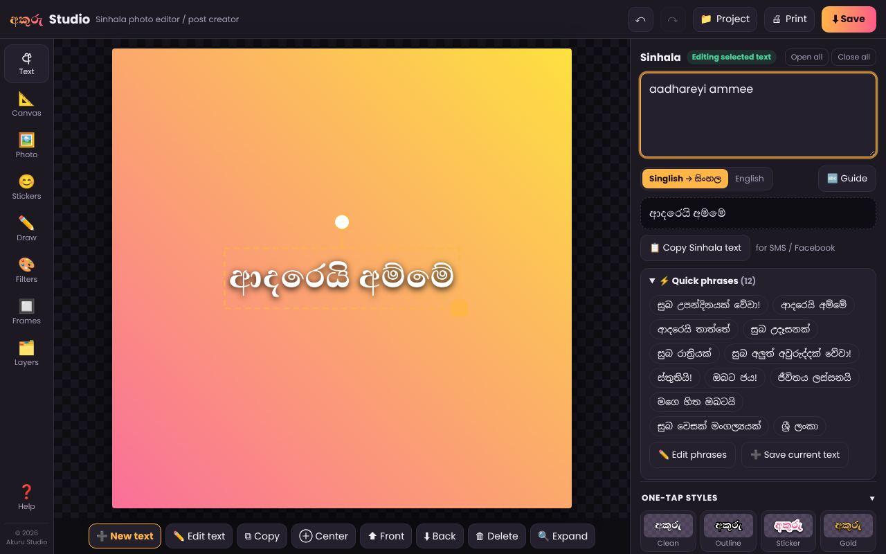
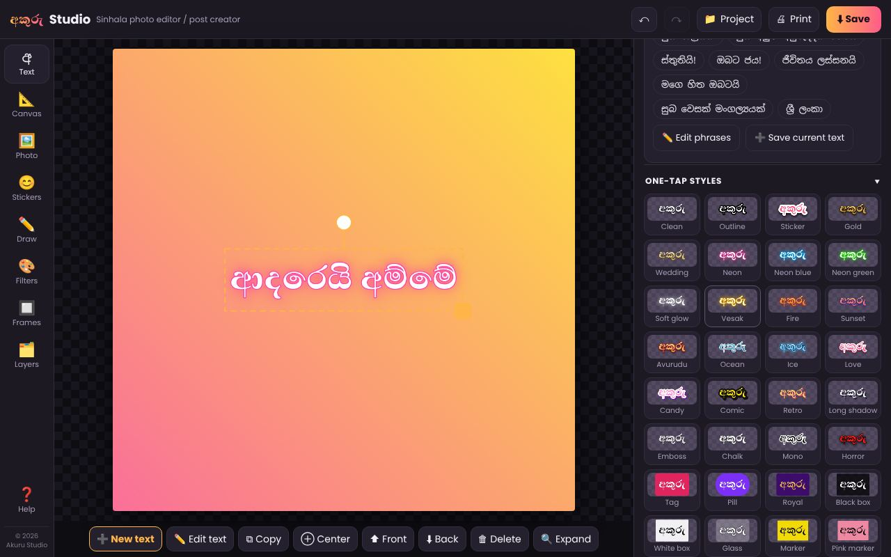
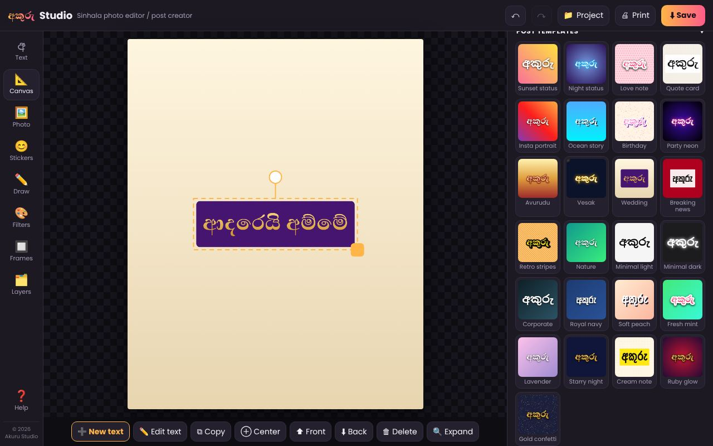
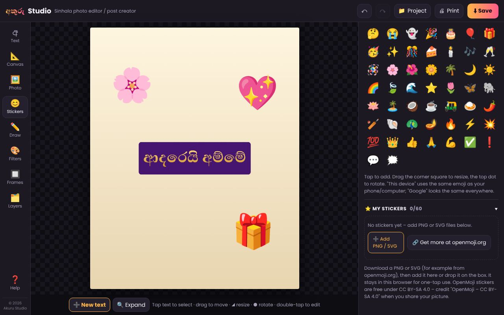
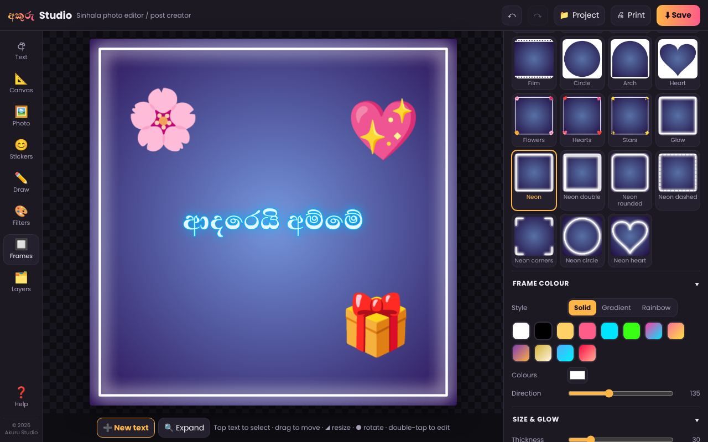
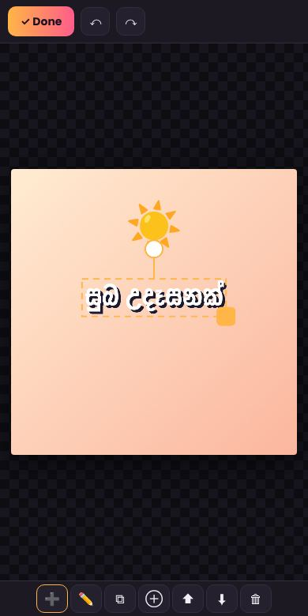
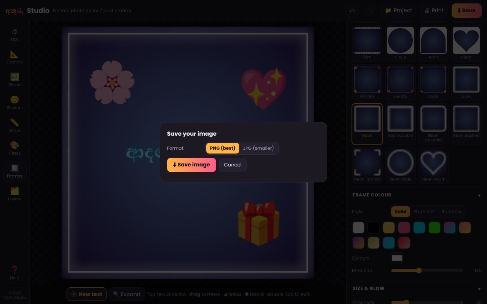
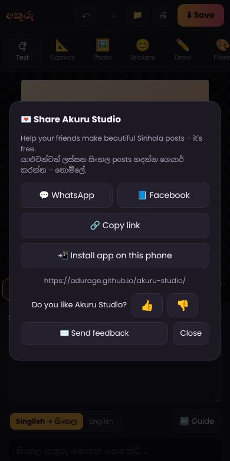

What you can makeඔබට හදන්න පුළුවන් දේ
Beautiful Sinhala posts in a few taps – here is how.clicks කිහිපයකින් ලස්සන සිංහල posts හදන්නේ මෙන්න මෙහෙමයි.


All made in Akuru Studio with its own templates, styles and emoji.සියල්ල අකුරු Studio එකේම templates, මෝස්තර සහ emoji වලින් හැදුවා.

1Type Singlish, get SinhalaSinglish වලින් ටයිප් කරන්න, සිංහල ලැබේ
Type the way you text: aadhareyi ammee becomes ආදරෙයි අම්මේ. Tap 🔤 Guide to see every letter, or pick a quick phrase.
ඔබ SMS ලියන විදිහටම ටයිප් කරන්න: aadhareyi ammee → ආදරෙයි අම්මේ. සියලු අකුරු බලන්න 🔤 Guide ඔබන්න, නැත්නම් ඉක්මන් වාක්යයක් තෝරන්න.

2One-tap styles and fontsඑක තට්ටුවෙන් ලස්සන අකුරු
32 ready styles – outline, glow, gold, neon and boxes. Change the font, colour and size, or add your own fonts. Old FM fonts work too.
සූදානම් මෝස්තර 32ක් – outline, glow, රන්වන්, neon සහ කොටු. අකුරු වර්ගය, පාට සහ ප්රමාණය වෙනස් කරන්න, නැත්නම් ඔබේම fonts එකතු කරන්න. පරණ FM fonts ද වැඩ කරයි.

3Post templates and social sizesPost templates සහ social media ප්රමාණ
Pick a template for a WhatsApp status, Facebook, Instagram or print. Like your own look? Save it under My templates.
WhatsApp status, Facebook, Instagram හෝ print සඳහා template එකක් තෝරන්න. ඔබ හදපු මෝස්තරයට කැමතිද? My templates වල සුරකින්න.

4Emoji and your own stickersEmoji සහ ඔබේම stickers
All phone emoji with search, plus your own PNG or SVG stickers – for example free ones from openmoji.org.
දුරකථනයේ සියලු emoji, සෙවීමත් සමඟ. ඔබේම PNG හෝ SVG stickers ද එකතු කරන්න – උදාහරණයක් ලෙස openmoji.org වෙතින් නොමිලේ.

5Frames, effects and drawingරාමු, effects සහ ඇඳීම
27 frames including neon, 25 photo effects, brushes and shapes. Making a logo? Use a transparent background and save as PNG.
neon ඇතුළු රාමු 27ක්, photo effects 25ක්, බුරුසු සහ හැඩතල. Logo එකක් හදනවද? විනිවිද පෙනෙන (transparent) පසුබිමක් තෝරා PNG ලෙස සුරකින්න.

6Easy editing on your phoneදුරකථනයෙන් පහසුවෙන් සකසන්න
Tap 🔍 Expand and the picture fills the screen. Move and resize text with your finger – upright or sideways. Tap ✓ Done to go back. Spread two fingers to zoom in, pinch to zoom out.
🔍 Expand ඔබන්න, පින්තූරය මුළු තිරයම පුරවයි. ඇඟිල්ලෙන් අකුරු ගෙනයන්න, ලොකු කරන්න – දුරකථනය කෙළින් හෝ හරස් අතට. ආපසු යන්න ✓ Done ඔබන්න. ඇඟිලි දෙකකින් විහිදුවා zoom කරන්න, හකුළා zoom out කරන්න.

7Save, print and keep workingසුරකින්න, print කරන්න, පසුව නැවත වැඩ කරන්න
Save as PNG or JPG, print, or make a PDF. Your last design is kept for you, and 📁 Project saves a file you can edit later on any device.
PNG හෝ JPG ලෙස සුරකින්න, print කරන්න හෝ PDF එකක් හදන්න. ඔබේ අවසාන design එක ස්වයංක්රීයව තබා ගනී. 📁 Project මගින් ඕනෑම උපාංගයක පසුව සංස්කරණය කළ හැකි file එකක් සුරකින්න.

8Install it as an appApp එකක් ලෙස දාගන්න
Put Akuru Studio on your home screen – it opens full screen with its own අ icon and works without internet.
අකුරු Studio ඔබේ home screen එකට දාගන්න – සම්පූර්ණ තිරයෙන්, අ icon එකත් සමඟ විවෘත වේ, internet නැතිවත් වැඩ කරයි.
- Android (Chrome): open the app, tap 💌 Share ▸ 📲 Install app – or Chrome's ⋮ menu ▸ Install app.
- iPhone / iPad (Safari): open the app in Safari, tap the Share button (the square with ⬆ – on iOS 26 tap ••• first, then Share), scroll down ▸ Add to Home Screen ▸ Add. Opened from WhatsApp? Tap its Safari/compass icon first.
- On iPhone, ⬇ Save opens the share menu – choose Save Image to put your picture in Photos.
- Android (Chrome): app එක විවෘත කර 💌 Share ▸ 📲 Install app ඔබන්න – නැත්නම් Chrome හි ⋮ menu ▸ Install app.
- iPhone / iPad (Safari): app එක Safari හි විවෘත කර Share බොත්තම (⬆ සහිත කොටුව – iOS 26 හි මුලින් ••• ඔබා පසුව Share) ඔබන්න, පහළට scroll කර ▸ Add to Home Screen ▸ Add. WhatsApp එකෙන් විවෘත කළා නම්, මුලින් එහි Safari/compass icon එක ඔබන්න.
- iPhone හි ⬇ Save ඔබූ විට share menu එක එයි – ඡායාරූපය Photos වලට දාන්න Save Image තෝරන්න.
Free · no account · your photos never leave your deviceනොමිලේ · ගිණුමක් අවශ්ය නැත · ඔබේ ඡායාරූප ඔබේ උපාංගයෙන් පිටතට යන්නේ නැත